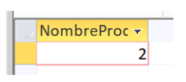
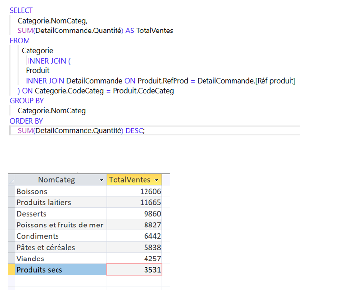

Partie 1 : Présentation de notre étude économique
Présentation de notre étude économique durable
Dans le cadre de notre projet, nous avons étudié les informations que l'entreprise pourrait collecter afin d'améliorer son fonctionnement et son offre commerciale.
Notre étude s'est concentrée sur cinq catégories principales :
| Catégorie | Informations à collecter | Utilité pour l'entreprise |
|---|---|---|
| 1.Informations sur les clients | Nom, adresse électronique, téléphone et adresse de livraison. | Identifier les clients et gérer les livraisons. |
| 2.Préférences des clients | Produits, catégories et marques préférées. | Personnaliser les offres et les récompenses de fidélité. |
| 3.Historique des commandes | Commandes précédentes, dates et montants. | Comprendre les comportements d'achat et anticiper les commandes. |
| 4.Délais de livraison | Délais, retards et statuts de livraison. | Améliorer les performances de livraison et l'expérience client. |
| 5.Coûts d'emballage | Types d'emballages, quantités et coûts. | Optimiser les emballages et les coûts de livraison. |
Ces informations permettent de mieux comprendre les besoins des clients, de personnaliser les offres, d'améliorer les livraisons et d'optimiser les coûts d'emballage.
Question 4 : Nombre de produits carnés non commandés actuellement
Objectif de la requête
L'objectif est de calculer le nombre de produits carnés qui n'ont jamais été commandés par les clients.
Méthode utilisée
Nous avons utilisé la fonction COUNT(*) pour compter les produits. La condition CodeCateg = 6 permet de sélectionner uniquement les produits de la catégorie des produits carnés.
Ensuite, nous avons utilisé une sous-requête avec NOT IN pour exclure les produits déjà présents dans la table DetailCommande.
Requête SQL
SELECT
COUNT(*) AS NombreProduitsNonCommandes
FROM
Produit
WHERE
Produit.CodeCateg = 6
AND Produit.RefProd NOT IN (
SELECT
DetailCommande.[Réf produit]
FROM
DetailCommande
);Résultat obtenu
Le résultat de notre requête est de 2 produits carnés non commandés.
Résultat obtenu

Interprétation
Cet indicateur permet à l'entreprise d'identifier les produits qui n'ont pas encore été commandés. Elle peut ainsi réfléchir à son offre commerciale et envisager des actions pour améliorer les ventes de ces produits.
Requête personnelle : Quelles sont les catégories de produits les plus et les moins vendues chez KDou ?
Objectif de la requête
L'objectif de cette requête est d'identifier les catégories de produits qui enregistrent les quantités de ventes les plus élevées et les plus faibles chez KDou.
Intérêt de la requête
Cette analyse permet à KDou de mieux comprendre les préférences des clients. Elle aide également l'entreprise à adapter son catalogue, à gérer ses stocks et à prendre de meilleures décisions commerciales.
Méthode utilisée
Pour réaliser cette requête, j'ai relié trois tables : Categorie, Produit et DetailCommande, grâce aux jointures internes (INNER JOIN).
Ensuite, j'ai utilisé la fonction SUM() pour calculer la quantité totale vendue dans chaque catégorie. La clause GROUP BY permet de regrouper les résultats par catégorie. Enfin, ORDER BY ... DESC permet de classer les catégories de la plus vendue à la moins vendue.
Requête SQL
SELECT
Categorie.NomCateg,
SUM(DetailCommande.Quantité) AS TotalVentes
FROM
Categorie
INNER JOIN (
Produit
INNER JOIN DetailCommande
ON Produit.RefProd = DetailCommande.[Réf produit]
)
ON Categorie.CodeCateg = Produit.CodeCateg
GROUP BY
Categorie.NomCateg
ORDER BY
SUM(DetailCommande.Quantité) DESC;Résultats obtenus
Les résultats montrent que les Boissons sont la catégorie la plus vendue avec 12 606 unités. À l'inverse, les Produits secs représentent la catégorie la moins vendue avec 3 531 unités.

Interprétation
Cette requête permet à KDou d'identifier les catégories les plus et les moins demandées par ses clients. L'entreprise peut ainsi adapter son offre commerciale et mieux gérer ses stocks en fonction des ventes.